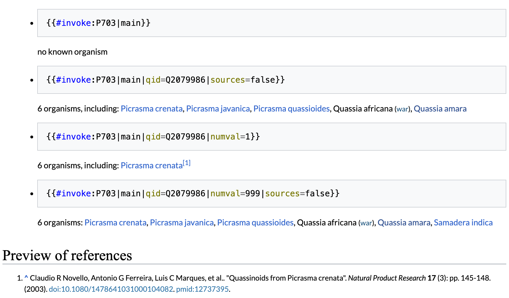

Skip to main content
Adriano Rutz
Articles
CV
Posts
Talks
Teaching
Varia
Categories
All
(2)
Chemistry
(1)
LOTUS
(1)
Open Science
(2)
Wikidata
(1)
Posts
Order By
Default
Title
Date - Oldest
Date - Newest
Author

Cultivating Knowledge Flow in Open Chemistry
Chemistry
LOTUS
Open Science
Wikidata
Five years ago, LOTUS
(Rutz et al. 2022)
started as a small attempt to cultivate the flow of chemical knowledge, in the same way we study how metabolites flow through living…
Jan 20, 2026
Open Science Upgrade: Adding Blog Posts to my Website and Linking to Rogue Scholar
Open Science
I have finally opened a
Posts
section on my website! Every post should now automatically get a DOI.
Aug 4, 2025
No matching items